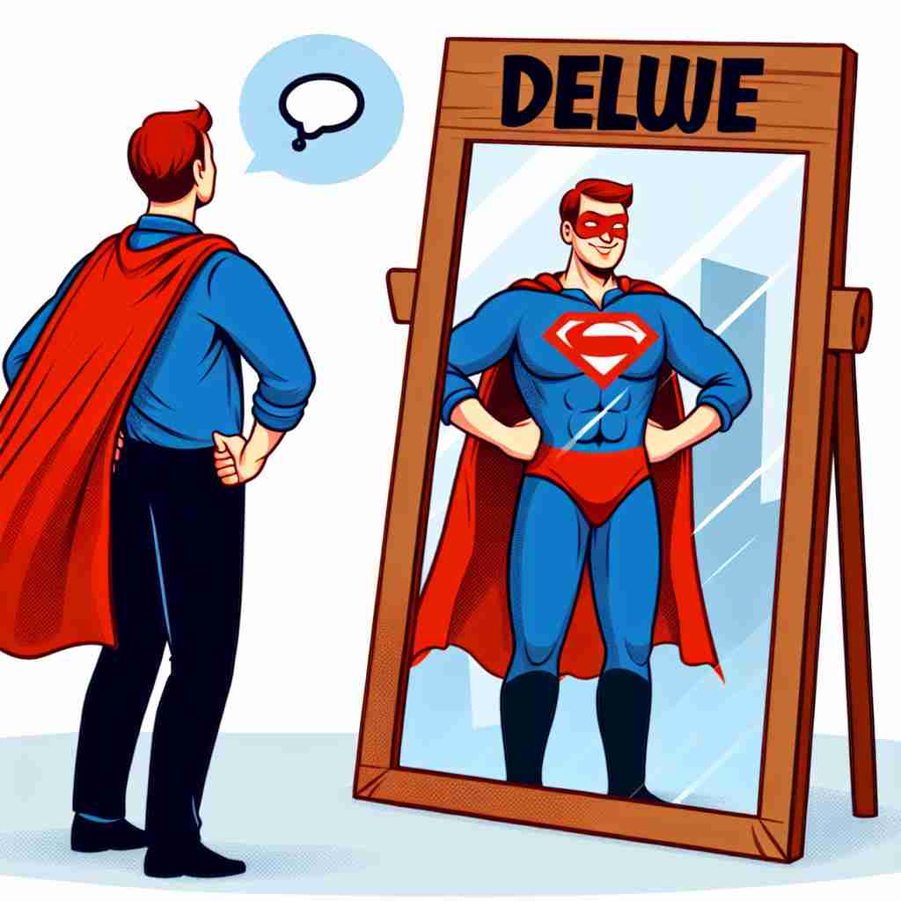

💬 He may delude himself into thinking he is a superhero.
💬 The magician can delude the audience with his amazing tricks.

💬 The magician can delude the audience with his tricks.
🔈 [dɪ'l(j)uːd]
🗝️ v. to make someone believe something that is not true
🖼️ 在一个繁华的市场上，街头艺人正在表演一个戏法。他挥舞着手中的魔术棒，观众目不转睛地看着。他从空中'变出'一只鸽子，让观众惊叹不已。但实际上，这只鸽子是一种视觉错觉，这展示了'delude'让人信以为真的含义。
🔍 想象'delude'如同给某人戴上一副扭曲现实的眼镜。无论是欺骗自己、误导他人，还是逃避现实，都源于这个核心概念：让人相信不真实的事物。记住这个'扭曲现实'的核心意象，可以帮助你联想并记住'delude'的各种用法。
💬 He may delude himself into thinking he is a superhero.
💬 The magician can delude the audience with his amazing tricks.
💬 The magician can delude the audience with his tricks.
🌳 由前缀 "de-"（加强或否定）和词根 "lud"（玩，戏剧）组成，字面意思是 "玩弄"，引申为 "欺骗"。
💡 记忆 "delude" 时，可以联想到 "deceive"（欺骗），通过记住词根 "lud" 与 "戏弄" 相关，有助于理解和记住其含义为 "欺骗"。
🗝️ v. to mislead the mind or judgment of
🖼️ 在一场重要的商业会议中，一位精明的商人通过华丽的演讲和复杂的数据图表，说服与会者相信他的公司将会实现巨大的增长。事实上，他故意模糊了一些关键信息，从而'delude'了与会者的判断。
💬 The advertisement deluded consumers about the product's effectiveness.
❓ 通过欺骗使某人的思维或判断产生错误
🗝️ v. to evade or escape by trickery
🖼️ 一个狡猾的小偷正在被警方追捕。他故意在小巷中留下错误的痕迹，迅速消失在夜色中。通过这种计策，他成功'delude'了警方的追捕。
💬 The suspect tried to delude the police by giving false information.
❓ 使用欺骗手段逃避或逃脱
🗝️ v. to frustrate or disappoint
🖼️ 一位年轻艺术家满心期待地展示她的最新作品，却发现观众反应平淡。她原本对成功抱有很大希望，却被这种冷淡所'delude'，感到失落和失望。
💬 His promises deluded her, leaving her frustrated when he didn't follow through.
❓ 通过给予虚假希望而导致失望或挫折